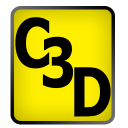

This collection of C3D files is a resource for programmers, developers, and users who want to test their software applications for compatibility with the C3D standard and different manufacturers files for data exchange compatibility. Each downloadable zip file contains a text file with additional information about the C3D file contents. This collection has been updated to organize the file collection by functionality while retaining the original ZIP file names for compatibility.
All software applications that claim C3D compatibility should be able to open and read the sample files that meet both the original and current C3D specifications as well as handle C3D files that contain errors in a sensible manner.
CURRENT C3D EXAMPLES
This file contains a collection of sample C3D files submitted by various manufacturers to C3D.ORG for the web site upgrade in 2019 to demonstrate each companies current implementation of the C3D file format. Some files may include parameters that do not fully meet the C3D standard, for example incorrect analog scale parameters.
SAMPLE00 - CURRENT C3D SAMPLES
- Advanced Realtime Tracking GmbH
- Codamotion
- Cometa Systems
- Innovative Sports Training
- Motion Analysis Corporation
- NextGen Ergonomics
- Vicon Motion Systems
TEST SUITES
Each of the test suites contains a collection of C3D files, each containing identical data and parameters in the three C3D formats variants (DEC, Intel, and SGI/MIPS formats) written as floating-point and integer data types. These files can be used to check that an application reads all of the C3D file types correctly. Each file has been generated from the same original data. The C3D compatibility test suite contains files with varying parameter and data block locations an is designed to demonstrate that C3D applications read the parameter and data block locations correctly.
SAMPLE01 - C3D FILE TEST SUITE
- This is a unique set of six C3D files created using ADTech AMASS software on a DEC PDP11 running the RSX11-M operating system in 1989. Each of the six files contain identical data and parameters in each of the C3D formats variants (DEC, Intel, and SGI/MIPS endian formats) in both floating-point and integer data types. These files can be used to verify that software applications read all of the six C3D file format variations correctly as all six files contain identical data values. A spreadsheet is included that documents the calculation of the POINT:SCALE factor for C3D files.
SAMPLE02 - C3D FILES FOR DATA FORMAT TESTING
- A set of six C3D files containing data stored as integer and floating-point values in Intel, SGI and DEC endian formats. The files were created using AMASS with Vicon 370 hardware - each file contains identical data, parameters, and header events stored in each of the six basic C3D formats variants and can be used to verify that software applications read the individual C3D formats correctly.
SAMPLE08 - C3D COMPATIBILITY TEST SUITE
- A set of C3D test files in Intel integer format data generated by Motion Lab Systems. These files can be used to check that C3D compatible applications read the correct pointer values from the C3D header in block 1 of the C3D file. All files contain identical 3D and parameter data but place the parameter and 3D data sections in different locations.
SAMPLE36 - C3D POINT:FRAMES TEST SUITE
- A set of C3D files generated by Motion Lab Systems that can be used to test software applications abilities to read different sized C3D files (18,124, 36,220 and 72,610 frames). These files demonstrate that the parameter POINT:FRAMES can be stored as either an integer, or a floating point value, when software applications read the C3D parameter section correctly.
SAMPLE C3D DATA
These C3D files demonstrates the C3D parameter structure and recorded data values from various manufacturers and data collection environments.
SAMPLE07 - 16-BIT ANALOG DATA
- A sample C3D file that contains 16-bit analog data - note the values for the parameter ANALOG:OFFSET. The data is stored in PC floating point format as directly sampled values which enables the user to review the data collection performance and correct any configuration errors after the data collection as taken place. Unfortunately the file does not contain any valid 3D data points or significant analog data values. Many manufacturers have abandoned this method with the result that any data sampling or scaling errors in the floating point samples are hard to diagnose.
SAMPLE10 - TYPE-2, TYPE-3, AND TYPE-4 FORCE PLATE DATA
- Two C3D files containing identical force plate TYPE-2 and TYPE-4 data, one is configured to describe the data as a TYPE-2 plate using the major diagonal components of the force plate sensitivity matrix while the second file describes the force plate as a TYPE-4 plate using the entire sensitivity matrix. The TYPE-3 data sample contains both TYPE-2 and TYPE-3 force plates in a lab as a subject walks over both types.
SAMPLE12 - A VERY LARGE C3D FILE
- This is a single C3D file that contains over 100Mb of 3D data consisting of 364 markers over a total of 18,178 frames at 60Hz. This is an excellent test file for C3D software applications to verify their ability to handle large C3D files.
SAMPLE17 - A C3D FILES WITH 14 FORCE PLATES
- A sample C3D file from a Vicon system with 128 channels of analog data from 14 force plates using 128 channels of analog data and a subject performing a test by applying a force to each plate during the trial session.
SAMPLE19 - A C3D FILE WITH 34,672 FRAMES OF ANALOG DATA
- The C3D file contains 34672 frames of analog data (two channels) stored as an Intel floating-point formatted file. This file will not be read correctly by any application that reads the C3D header or the parameters as 16-bit SIGNED values. It should be read as an UNSIGNED value.
SAMPLE22 - ROBOTIC 2D MOTION
- A C3D file generated by BKINtechnologies containing 2D and analog data from an exoskeleton.
SAMPLE29 - VIDEO GAME MOTION
- Two sample C3D files generated by NaturalPoint 3D tracking system for video game design. The files contain point data and some minor formatting errors.
SAMPLE31 - VERY LONG C3D FILES
- Each file contains more than 65535 frames of 3D data. These C3D files will not be readable by applications that do not calculate the 3D frames using the TRIAL group frame numbers.
SAMPLE34 - C3D FILES FROM AN IMU BASED SYSTEM
- Three sample C3D data files exported from the MEMS based Xsens motion capture system containing 3D data.
MOCAP DATABASE HDM05 (External Link)
- This is a link to the HDM05 motion capture database that contains contains more than three hours of motion capture data recording a wide range of human motions. The data is stored in both the C3D format and the Acclaim ASF/AMC ASCII-based format making it easy for students to understand. Recorded in 2005 at the Hochschule der Medien (HDM), Stuttgart, Germany this is an excellent source of sample C3D files made freely available under a Creative Commons license for research purposes.
SAMPLE37 - ADVANCED REALTIME TRACKING GMBH C3D FILES
- Four excellent sample C3D data files featuring multiple 3D data points.
APPLICATION FILES
This is a collection of sample C3D files from different sources that contain human gait data and are provided to demonstrate the wide range of marker models, data collection environments and formats that may be seen in C3D files. Note that a number of the files contain minor formatting or potential data value errors that may be encountered in individual lab installations.
SAMPLE03 - C3D FILES CONTAINING HUMAN GAIT DATA
- Three C3D files containing human gait data generated on a Vicon "370" system. These are a normal adult gait trial and the same file after processing to add gait events, kinematics, and kinetics information. An additional copy of the output file has been generated with a non-zero start time.
SAMPLE04 - C3D FILES CONTAINING HUMAN GAIT PARAMETERS
- Two files - bodybuilder.c3d is a large C3D file generated using Vicon "370" software, in DEC floating-point format. The second file, sub_labels.c3d, uses parameters to identify two subjects for the 3D point data. This is stored in DEC integer format and some of the calculated POINT variables show a loss of resolution as the data values approach the POINT:SCALE value.
SAMPLE05 - C3D FILE WITH FORCE AND EMG DATA
- A C3D file in DEC floating-point format with 6,492 frames defined by the TRIAL group containing EMG and force data from a subject walking to a force plate and then balancing on the plate.
SAMPLE23 - C3D FILE WITH CUSTOM PARAMETERS
- A PC floating point formatted C3D file that contains human gait with multiple custom GROUPS and PARAMETERS from different manufacturers in addition to the standard C3D parameter values.
SAMPLE26 - SAMPLE C3D FILES FROM QUALISYS
- A collection of C3D files (PC, floating-point format) provided by Qualisys illustrating human gait.
SAMPLE27 - SAMPLE GAIT WITH KYOWNA DENGYO FORCE PLATES
- A sample C3D file containing data from three Kyowa Dengyo force plates. The data from these plates is stored using the TYPE 3 force plate description.
SAMPLE28 - SAMPLE GAIT WITH TYPE-1 FORCE PLATES
- Two sample C3D files from a BTS system with TYPE-1 force plate data. Some formatting issues with the original files have been corrected in a third file included in this collection.
SAMPLE30 - SAMPLE GAIT FROM BIOGESTA
- Three sample C3D files produced by Biogesta that contain 3D point and analog data.
SAMPLE33 - A STATIC TEST C3D FILE
- A static test C3D file with a large parameter block. The original C3D standard permitted the DATA_START value (pointing to the start of the 3D data block) to be a signed integer (values +1 to +127) thus the maximum DATA_START value expected by many applications is +127. This C3D file has a DATA_START value of 188 which exceeds the signed limit of +127. It may crash older applications that interpret the DATA_START parameter as signed, instead of unsigned.
SAMPLE35 - ANALOG EMG DATA FROM MEGAWIN
- A sample C3D file containing EMG data created by the Mega Electronics company product MegaWin containing an isokinetic measurement with two channels of EMG, knee angle and torque. The file has a POINT:RATE value of 1 (sample per second) which results in an ANALOG:RATE value of 1250.
FORMATTING ISSUES
These C3D files illustrate common formatting issues that may be encountered when opening C3D files from a wide range of sources. These may be due to many different reasons - incorrect assumptions by the data collection or file creation software, potentially hardware errors during data collection, or configuration error in the data collection environment when the system was installed.
SAMPLE06 - PARAMETER NAME ERRORS
- Two early Motion Analysis Corporation C3D files, one in SGI format with parameter name errors that were subsequently corrected as demonstrated in the second file.
SAMPLE09 - INTEGER STORAGE ISSUES
- A collection of C3D files from a Vicon system demonstrating the issues caused by trying to store calculated gait variables as 3D point values while failing to adjust the POINT:SCALE value to accommodate the non-3D signal magnitudes.
SAMPLE11 - POOR FORCE PLATE DATA
- Two C3D files with poor force data from two different laboratories collected with different 3D systems and different force platforms.
SAMPLE13 - PARAMETER ERRORS
- Four C3D files with parameter errors that may prevent most end-user applications from accessing the data. These files can be opened and viewed by the MLSviewer which evaluates the internal format of C3D files to display the data regardless of internal format errors.
SAMPLE14 - DATA SYNCHRONIZATION ERRORS
- A single C3D file containing 3D and analog data illustrating a loss of 3D data and analog data synchronization which can be clearly seen when looking at the force plate Fz data.
SAMPLE15 - MISSING PARAMETERS
- Two C3D files from a force plate vector test but which do not contain the ANALOG:FORCE_PLATFORM group rendering the test meaningless.
SAMPLE16 - INVALID DATA
- Three sample C3D files that have all their 3D residuals set to -1 indicating that the data points are invalid. As a result most C3D applications will report that these files do not contain any data points.
SAMPLE18 - CORRUPT PARAMETER SECTION
- A C3D file with corrupt parameter section and may cause some applications to crash when reading the parameters.
SAMPLE20 - MISSING PARAMETERS
- This file contains a 3D data block but no parameters to describe the data. As a result most C3D applications will have trouble reading this file correctly.
SAMPLE21 - MISSING PARAMETERS
- A C3D file with data that does not match the parameters recorded in the file - as a result the data will be read incorrectly. The actual 3D data frame rate is 200 and the analog sample rate is 1000Hz but the parameters claim incorrectly that the POINT:RATE is 60 and the ANALOG:RATE is 1020.
SAMPLE24 - EMPTY PARAMETERS
- A C3D file with blank data labels which will cause most C3D applications to fail as there is no way to distinguish one 3D point from another.
SAMPLE25 - FLOATING-POINT TO INTEGER CONVERSION ISSUES
- Five C3D files that contain pre scaled force plate data illustrating the problems when a data is stored in floating point format without any consideration that the file might need to be converted to an integer format.
SAMPLE32 - DATA COLLECTION ERRORS
- A C3D file that illustrates a data corruption problem caused by importing data from a USB based system, while independently sampling data from other sources. The user thought the EMG data was noisy but spectrum analysis shows that the data import process had corrupted the EMG data.